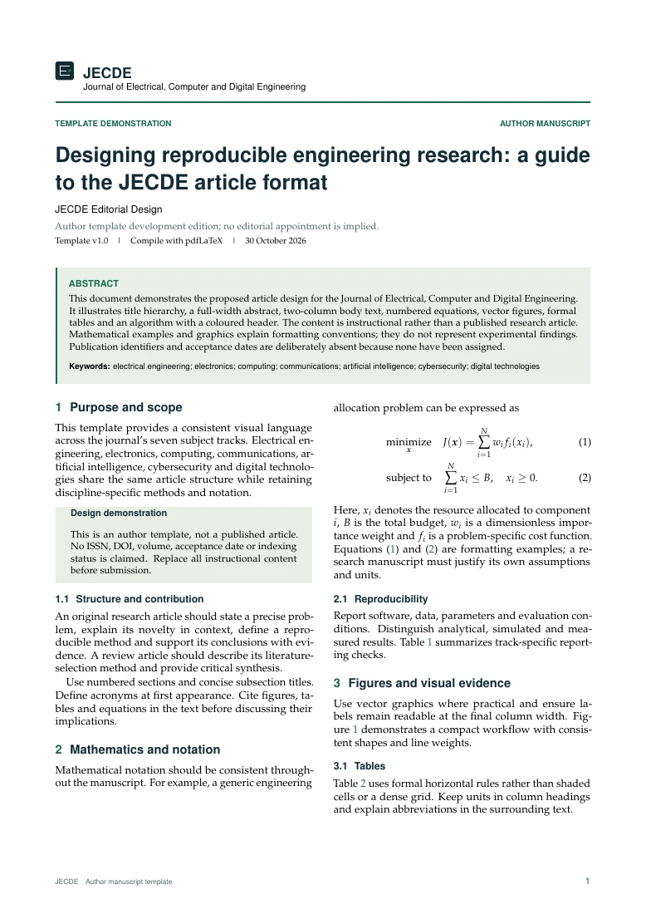

Research, beautifully typeset.
A distinctive article format for electrical, computer and digital engineering. Editable LaTeX source, an illustrated sample and a practical manuscript starter.
Precision on every page.
A full-width opening page, a clear abstract panel and a balanced two-column body. Forest-green accents connect equations, captions and algorithms without distracting from the research.
Version 1.0 · A4 · pdfLaTeX · Editable source · Overleaf-compatible
View journal source on GitHub →
Opening page
Journal masthead, article type, title, authors, affiliations, correspondence, abstract and keywords.
Scholarly details
Numbered equations, formal tables, vector figures, running headers and a dedicated algorithm header-bar environment.
Practical files
Journal class, clean manuscript starter, illustrated example, compiled PDF, build instructions and a template-code licence.
Start writing in three steps.
- Download and extract the ZIP package, or upload its contents to a new Overleaf project.
- Select
main.texas the main document and use pdfLaTeX. Keepjecde.clsin the same folder. - Replace the instructional fields, write the manuscript and compile twice to resolve cross-references.
Anonymous review option
Use \documentclass[review]{jecde} to hide the title-block author metadata. This does not anonymize acknowledgments, content or attached files. Inspect the manuscript manually. The journal's final review policy remains pending.